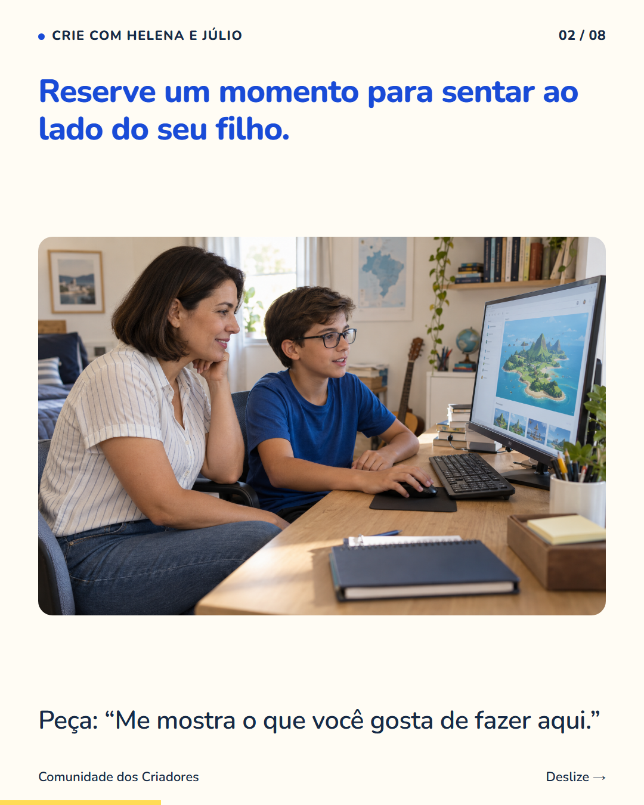
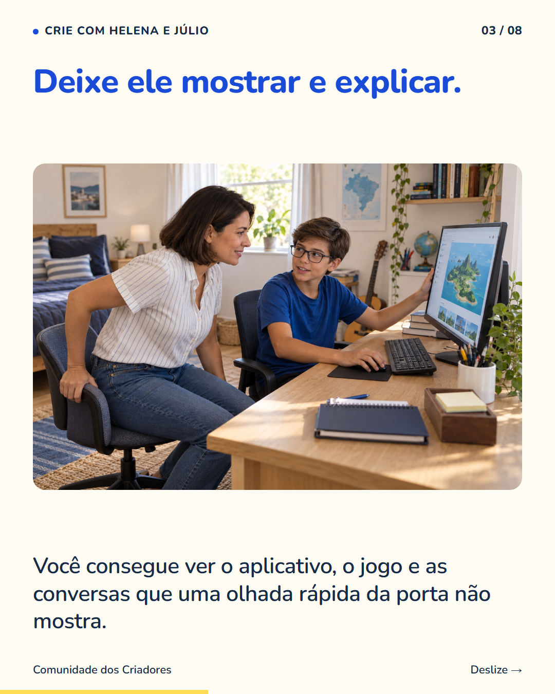
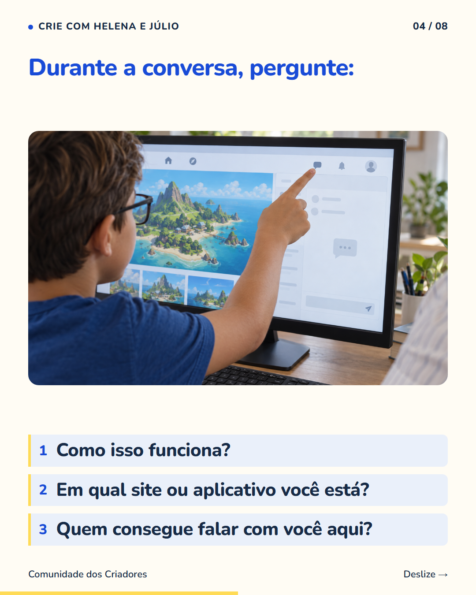
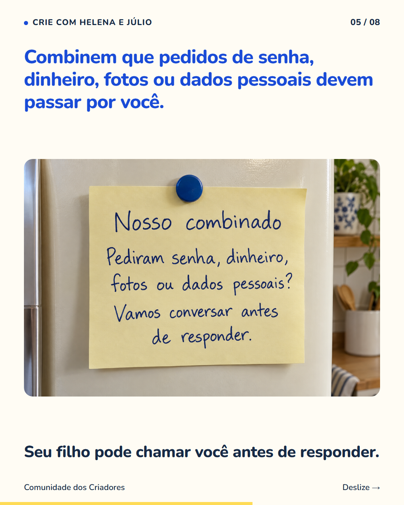
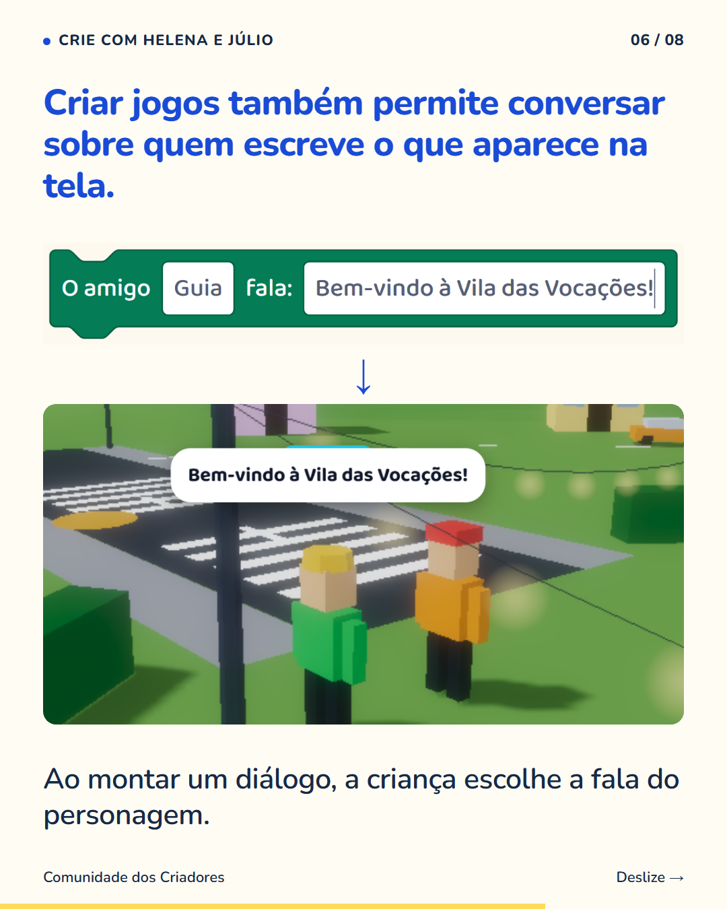
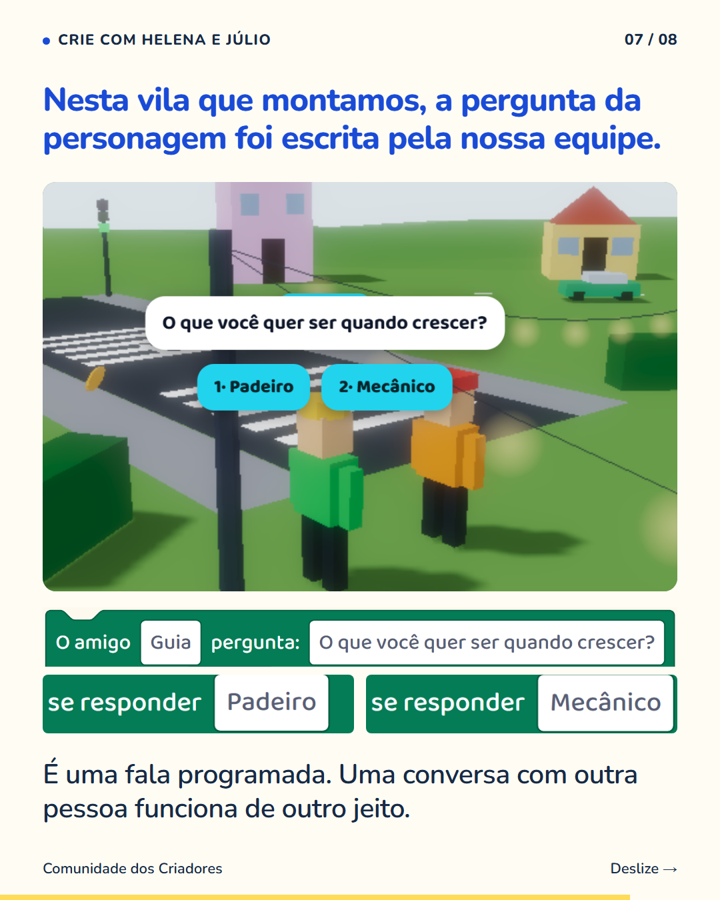
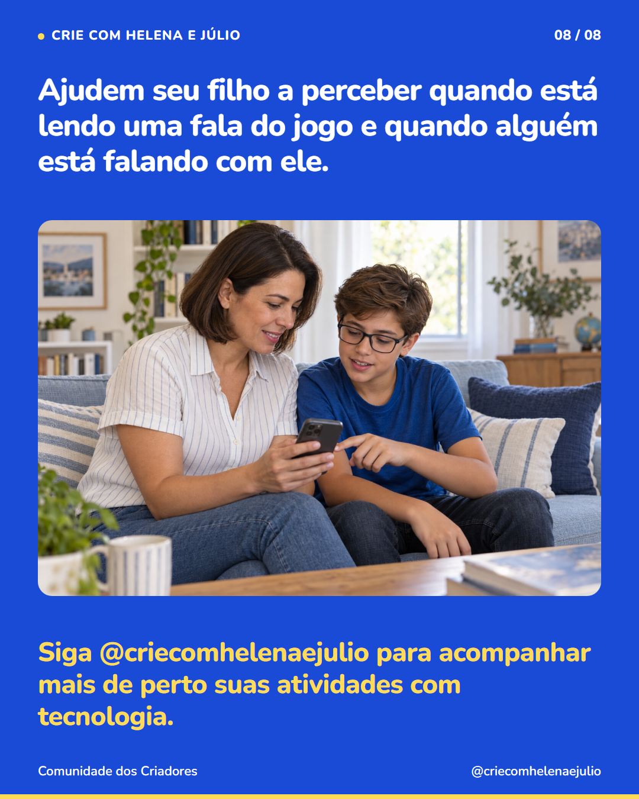

8 slides · 1080 × 1350 · Copy revisada · Da conversa em casa às falas do jogo







Sentar ao lado do seu filho pode mostrar coisas que uma pergunta feita da porta não mostra. Peça para ele apresentar o jogo, os vídeos ou o aplicativo que usa. Escute a explicação e olhem juntos onde aparecem mensagens e quem consegue enviá-las. Combinem que ele pode chamar você se alguém pedir senha, dinheiro, fotos ou dados pessoais. A conversa precisa continuar nos outros dias; uma atividade de programação não substitui esse acompanhamento. Na criação de jogos, há uma oportunidade de explicar as falas dos personagens. A criança escreve uma frase e vê o personagem repeti-la. Isso ajuda a conversar sobre a diferença entre uma fala preparada no jogo e uma pessoa numa conversa online. Siga @criecomhelenaejulio para acompanhar mais de perto suas atividades com tecnologia.